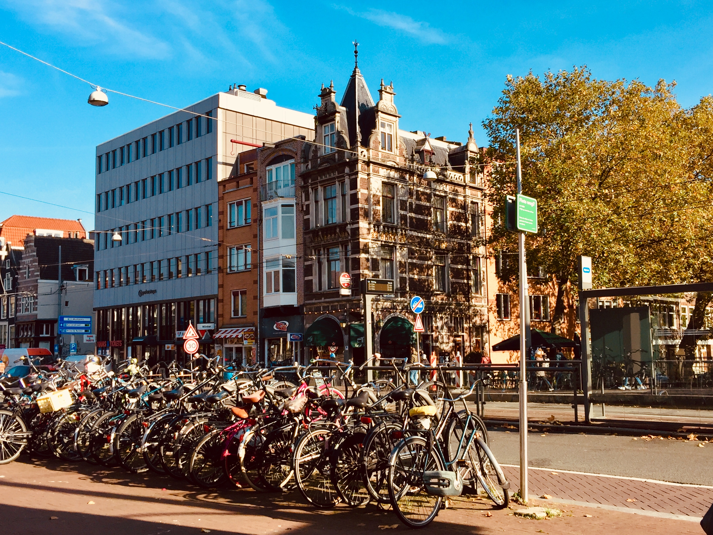
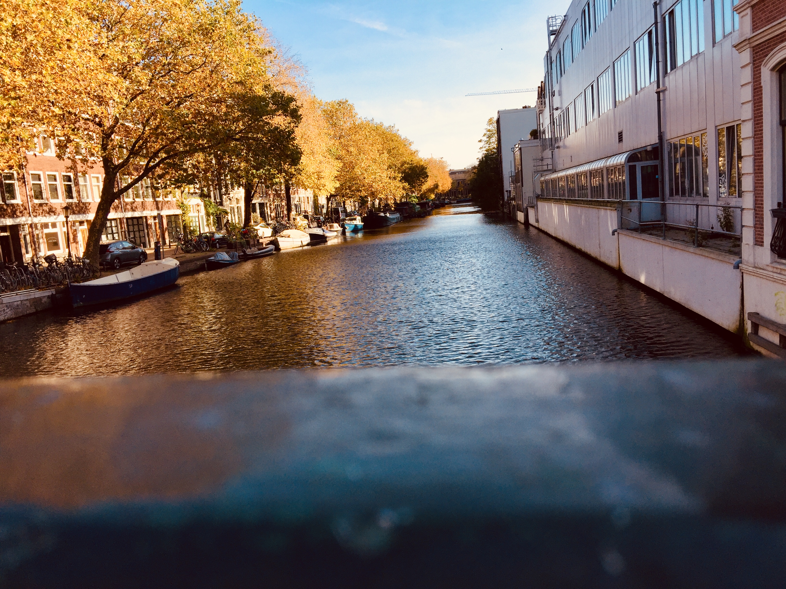

Time 35 minutes
Distance 2,5 km

The Prinsengracht
The Prinsengracht is called after Prins van Oranje. And is one of the 4 head canals that makes the grachtengordel. The creation started in 1612 after design of Hendrick jacobsz Staets and Lucas Jansz Sinck. On the sides of the canal stand many monuments like:
- The paleis van Justitie 1829 on Prinsengracht 436
- The best kept examples of the 5 identic halsgevels out 1701 on prinsengracht 849

Lijnbaansgracht
This canal is named after the lijnbanen of the touwslagerijen. This was digged after the start of the grachtengordel in 1612. On the Zieseniskade and westkade of the Lijnbaansgracht you can see the backside of the Barleaus Gymnasium. The building on the Weteringschans was in the earlier days this was an industry school.
The Vijzelgracht
The Vijzelgracht is from 1658, when the large city expansion found place. Before that there was a monastery and an orphanage. Believed is that the Vijzeggracht and the Vijzelstraat is named after 17th century residents, Cornelis and Jan Vijzelaar.
